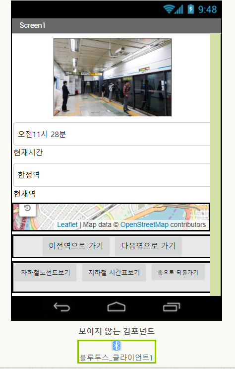

앱인벤터2를 이용하여서 직접 간단하게 블록코딩을 이용하여서 앱을 만들려고 노력한다.
출/퇴근시간에 자주 사용하길 권장하는 지하철 시간표 앱입니다.
 지하철 시간표와 노선도 및 지하철의 감시카메라의 서버를 빌려와서 실시간으로 역의 상태를 확인한다.앱인벤터2를 이용한 지하털 실시간 시간표 앱
간단하게 앱 디자인을 통해서 만들어 보았습니다. 간단한 버튼으로 링크로 연결하여 지하철의 있는 노선도와 그 역에 관련된 시간표를 표현해보았습니다.
간단하게 감시카메라 역의 서버를 다 빌려오기에는 현실적으로 불가능하여서 부산에 있는 한 역에 대해서만 임시적으로 앱을 만들어 서 표현하였습니다.
이 앱이 실현가능성이 있다면 저희 부산에 있는 모든 지하철의 카메라 서버와 연동시켜서 실시간으로 앱을 보여주는 기능이 있었으면 좋겠습니다.
서버와 클라이언트와 연결하는 과정에서 인터넷 웹을 사용해야한다. 블루투스의 경우에는 동영상으로 블루투스를 스트리밍 하기가 현실적으로 어렵다 데이터 통신속도 와 신호 세기 약하기 때문에 휴대폰을 모뎀으로써 사용한다해도 불가능한 점이 많다.